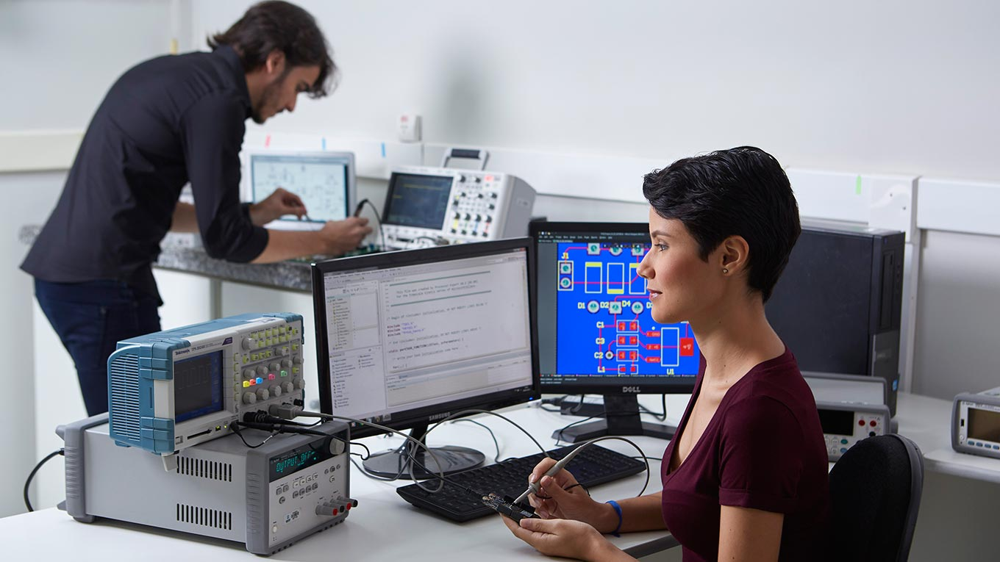

Cursos de Tecnologia da Informação
Sistema e Mídias Digitais

O profissional de Sistemas e Mídias Digitais atua no desenvolvimento de sistemas multimídia de forma bem diversificada: desde a área de sistemas tradicionais de computadores até jogos digitais. O diferencial do curso é a interação entre programação de sistemas digitais e comunicação baseadas e recursos multimídia.
Ciência da Computação
.jpg)
O curso de Ciência da Computação forma profissionais qualificados para desenvolver programas e sistemas de informática, desde o planejamento do projeto até a implantação e gerenciamento do software. Por ser da área de ciências exatas, o aluno precisa ter uma boa base matemática e raciocínio lógico desenvolvido.
Análise e Desenvolvimento de Sistemas
.jpg)
O tecnólogo da área lida com softwares, programação, bancos de dados, redes de computadores, dentre outras ferramentas tecnológicas que facilitam a análise, armazenamento e transmissão de informações. Mas, essas são apenas algumas das atribuições do analista de sistemas.
Engenharia da Computação
O curso de Engenharia da Computação tem em sua grade curricular disciplinas voltadas para eletrônica e fabricação de hardware. Essa é a atuação mais tradicional da profissão. Nesse mercado, o engenheiro vai projetar e construir equipamentos, sejam eles computacionais ou periféricos, como teclados, mouses etc.